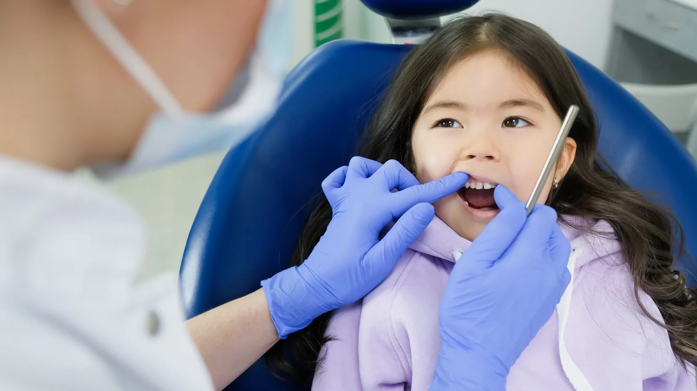

General & Preventive Dentistry
Getting children comfortable in the chair early.
How a child feels about the dentist at six tends to stick with them at thirty. A good deal of adult dental anxiety traces back to one rushed or frightening childhood appointment, which is why we take early visits slowly and keep them low-key.
Children are welcome from their first teeth. The first appointment is usually short and largely about familiarity — sitting in the chair, having a count of the teeth, meeting the people in the room. Nothing is forced. If a child is not ready for something on the day, we leave it and try again next time.

What a children’s appointment involves
Dr Meg checks the teeth that have come through, how the adult teeth are developing underneath, the bite, and any early signs of decay. She will talk to your child directly, in language they understand, and explain anything before doing it rather than surprising them.
Cleans for children are gentle and quick. Fluoride is applied where appropriate. X-rays are taken only where there is a clinical reason, and the interval depends on the child’s decay risk.
You are welcome in the room throughout. Some children do better with a parent beside them, others settle faster on their own, and you know your child best.
Prevention that actually works
Most childhood decay is preventable, and the interventions are unglamorous: brushing twice a day with an age-appropriate fluoride toothpaste, supervising brushing until around eight, keeping sugary drinks to mealtimes rather than sipping through the day, and coming in regularly enough that anything starting is caught early.
Fissure sealants are worth considering for newly erupted adult molars. The deep grooves on those chewing surfaces are difficult to clean and are where a large share of childhood decay begins. A sealant fills the groove with a thin protective coating and takes only a few minutes per tooth.
Knocks, chips and toothache
Children knock teeth. If a baby tooth is knocked out, do not put it back in — phone us. If an adult tooth is knocked out, handle it by the crown rather than the root, rinse it briefly in milk or saline if it is dirty, put it back in the socket if you can and hold it there, and get to us straight away. Time matters a great deal with an avulsed adult tooth.
For toothache, swelling or a chipped tooth, call us and we will fit them in as soon as we reasonably can.
The Child Dental Benefits Schedule
Eligible children may be able to access a set amount of dental care over a two-year period through the Child Dental Benefits Schedule. Eligibility depends on your family’s circumstances and is determined by Services Australia. Ask us and we will check whether your child is eligible.
Lava Street Dental accepts eligible CDBS patients. How much of a particular course of treatment the schedule covers depends on your child’s remaining benefit balance, so we will confirm the cost with you before treatment goes ahead.
Frequently asked questions
Around their first birthday, or when their first teeth appear. Early visits are mostly about familiarity, not treatment, and they let us pick up problems before they become uncomfortable.
Yes. Baby teeth hold space for the adult teeth, and decay in them can be painful, cause infection, and affect the developing tooth underneath. They are worth looking after.
Take it slowly. We explain everything first, let them look at instruments, and stop when asked. Nothing is done by surprise. It sometimes takes a few short visits before a child is ready for treatment, and that is perfectly acceptable.
Six months suits most children, though a child with a high decay risk may benefit from three or four monthly visits.
For deep, difficult-to-clean grooves on newly erupted adult molars, generally yes. Dr Meg will assess whether your child’s teeth would benefit rather than sealing everything as a matter of course.
It is explained in child-appropriate terms first, and done gently under local anaesthetic. If a child is genuinely not able to cope, we will discuss options rather than pressing on.